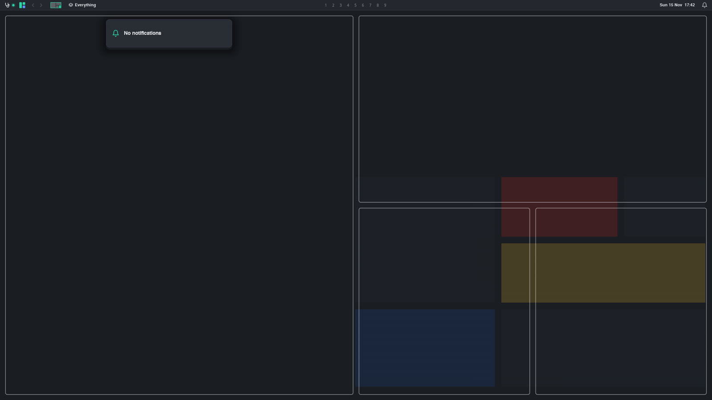

Desk #87
Tap Super+D to clear the desk, hold it to peek
A tap minimizes every window and remembers the layout. Tap again to bring them back. Hold Super+D and the windows fade to outlines over the dashboard until you let go.
In 0.18.0, Super+D added an empty Desktop tile beside your windows. In 0.19.0, holding it shows the desk.